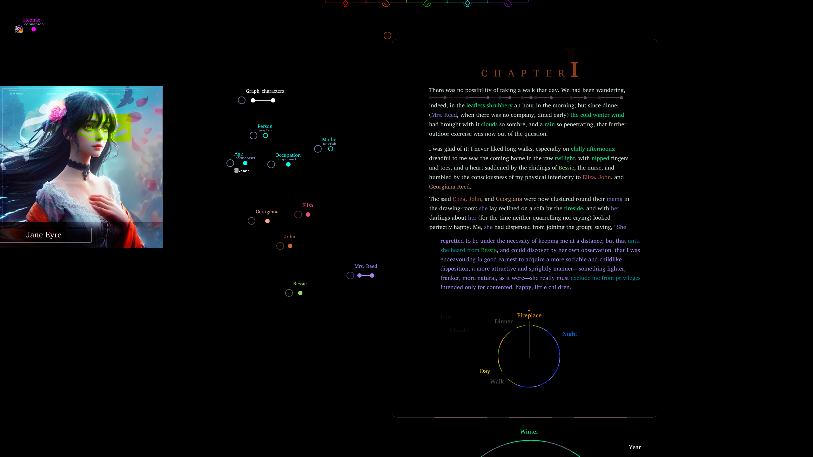

figure
Dear Figure,
Below is the latest design pass on GraphSail, my IDE for book simulation. My work on interface design and continual learning architectures for autonomous software agent fleet engineering and open ended invention shares many of the opportunities of robot behavior coordination: ie processing graphs from natural language and images to improve civilization.
I use Krita and then program the interface from scratch with C++ in flecs and interact with Python via files/servers for AI/ML and data pre/post processing ops.
